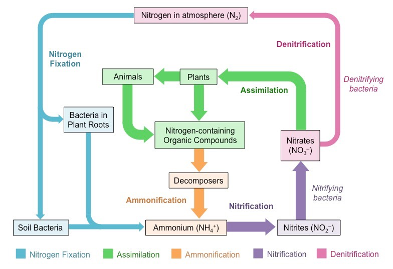

My Future School | Revolutionary Digital Learning Platform
Nitrogen Cycle
Diagrams & Flow charts:

Theory & Explanation:
The nitrogen cycle describes how nitrogen moves between plants, animals, bacteria, the atmosphere (the air), and soil in the ground. Nitrogen is an important element to all life on Earth.
Different Nitrogen States For Nitrogen to be used by different life forms on Earth, it must change into different states. Nitrogen in the atmosphere, or air, is N2. Other important states of nitrogen include Nitrates (N03), Nitrites (NO2), and Ammonium (NH4). Nitrogen Cycle: The pictures shows the flow of the nitrogen cycle. The most important part of the cycle is bacteria. Bacteria help the nitrogen change between states so it can be used. When nitrogen is absorbed by the soil, different bacteria help it to change states so it can be absorbed by plants. Animals then get their nitrogen from the plants.
Processes in the Nitrogen Cycle Fixation -
Fixation is the first step in the process of making nitrogen usable by plants.
Here bacteria change nitrogen into ammonium.
Nitrification - This is the process by which ammonium gets changed into nitrates by bacteria. Nitrates are what the plants can then absorb. Assimilation - This is how plants get nitrogen. They absorb nitrates from the soil into their roots. Then the nitrogen gets used in amino acids, nucleic acids, and chlorophyll.
Ammonification - This is part of the decaying process. When a plant or animal dies, decomposers like fungi and bacteria turn the nitrogen back into ammonium so it can reenter the nitrogen cycle.
Denitrification - Extra nitrogen in the soil gets put back out into the air. There are special bacteria that perform this task as well.
How have humans altered the nitrogen cycle?
Unfortunately, human activity has altered the cycle. We do this by adding nitrogen into the soil with fertilizer as well as other activities that put more nitrous oxide gas into the atmosphere. This adds in more nitrogen than is needed by normal cycle and upsets the cycle's balance. Fun Facts
Around 78% of the atmosphere is nitrogen.
However, this is mostly not usable by animals and plants.
Nitrogen is used in fertilizer to help plants grow faster.